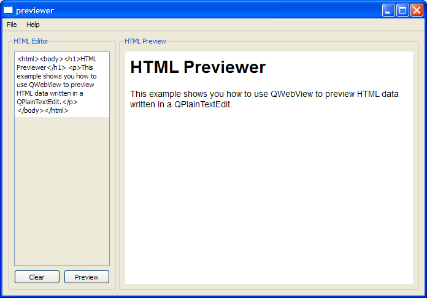
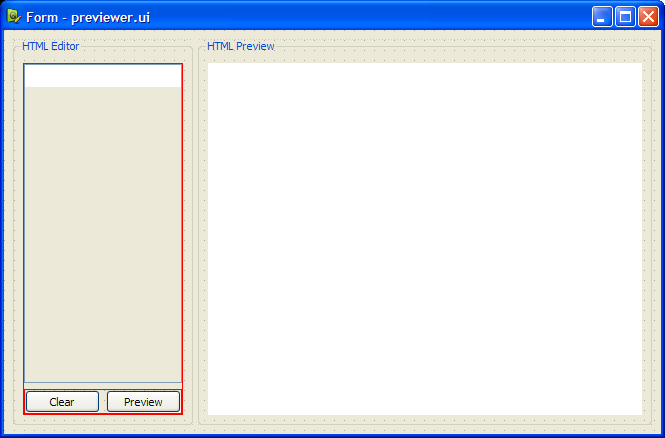

Previewer Example

The User Interface
Before we begin, we create a user interface using Qt Designer. Two QGroupBox objects - the editor group box and the previewer group box are separated by a QSplitter. In the editor group box, we have a QPlainTextEdit object, plainTextEdit, and two QPushButton objects. In the previewer group box, we have a QWebView object, webView.

Previewer Class Definition
The Previewer class is a subclass of both QWidget and Ui::Form. We subclass Ui::Form in order to embed the Qt Designer user interface form created earlier. This method of embedding forms is known as the multiple inheritance approach.
In our previewer.h file, we have a constructor and a slot, on_previewButton_clicked().
class Previewer : public QWidget, public Ui::Form { Q_OBJECT public: Previewer(QWidget *parent = 0); void setBaseUrl(const QUrl &url); public slots: void on_previewButton_clicked(); private: QUrl baseUrl; };
Previewer Class Implementation
The Previewer's constructor is only responsible for setting up the user interface.
Previewer::Previewer(QWidget *parent) : QWidget(parent) { setupUi(this); }
The on_previewButton_clicked() is a slot corresponding to the previewButton's clicked() signal. When the previewButton is clicked, we extract the contents of plainTextEdit, and then invoke the setHtml() function to display our contents as HTML.
void Previewer::on_previewButton_clicked() { // Update the contents in web viewer QString text = plainTextEdit->toPlainText(); webView->setHtml(text, baseUrl); }
MainWindow Class Definition
The MainWindow class for the Previewer example is a subclass of QMainWindow with a constructor and five private slots: open(), openUrl(), save(), about() and updateTextEdit().
class MainWindow : public QMainWindow { Q_OBJECT public: MainWindow(); private slots: void open(); void openUrl(); void save(); void about(); void updateTextEdit();
The private objects in MainWindow are centralWidget, which is a Previewer object, fileMenu, helpMenu and the QAction objects openAct, openUrlAct, saveAct, exitAct, aboutAct and aboutQtAct.
private: Previewer *centralWidget; QMenu *fileMenu; QMenu *helpMenu; QAction *openAct; QAction *openUrlAct; QAction *saveAct; QAction *exitAct; QAction *aboutAct; QAction *aboutQtAct; void createActions(); void createMenus(); void setStartupText(); };
There are three private functions: createActions(), createMenus() and setStartupText(). The createActions() and createMenus() functions are necessary to set up the main window's actions and assign them to the File and Help menus. The setStartupText() function, on the other hand, displays a description about the example in its HTML Previewer window.
MainWindow Class Implementation
The MainWindow's constructor invokes createActions() and createMenus() to set up the File menu and Help menu. Then, the Previewer object, centralWidget, is set to the main window's central widget. Also, we connect webView's loadFinished() signal to our updateTextEdit() slot. Finally, we call the setStartupText() function to display the description of the example.
MainWindow::MainWindow() { createActions(); createMenus(); centralWidget = new Previewer(this); setCentralWidget(centralWidget); connect(centralWidget->webView, SIGNAL(loadFinished(bool)), this, SLOT(updateTextEdit())); setStartupText(); }
Within the createActions() function, we instantiate all our private QAction objects which we declared in mainwindow.h. We set the short cut and status tip for these actions and connect their triggered() signal to appropriate slots.
void MainWindow::createActions() { openAct = new QAction(tr("&Open..."), this); openAct->setShortcuts(QKeySequence::Open); openAct->setStatusTip(tr("Open an existing HTML file")); connect(openAct, SIGNAL(triggered()), this, SLOT(open())); openUrlAct = new QAction(tr("&Open URL..."), this); openUrlAct->setShortcut(tr("Ctrl+U")); openUrlAct->setStatusTip(tr("Open a URL")); connect(openUrlAct, SIGNAL(triggered()), this, SLOT(openUrl())); ...
The createMenus() function instantiates the QMenu items, fileMenu and helpMenu and adds them to the main window's menu bar.
void MainWindow::createMenus() { fileMenu = menuBar()->addMenu(tr("&File")); fileMenu->addAction(openAct); fileMenu->addAction(openUrlAct); fileMenu->addAction(saveAct); fileMenu->addSeparator(); fileMenu->addAction(exitAct); menuBar()->addSeparator(); helpMenu = menuBar()->addMenu(tr("&Help")); helpMenu->addAction(aboutAct); helpMenu->addAction(aboutQtAct); }
The example also provides an about() slot to describe its purpose.
void MainWindow::about() { QMessageBox::about(this, tr("About Previewer"), tr("The <b>Previewer</b> example demonstrates how to " "view HTML documents using a QWebView.")); }
The MainWindow class provides two types of Open functions: open() and openUrl(). The open() function opens an HTML file with fileName, and reads it with QTextStream. The function then displays the output on plainTextEdit. The file's name is obtained using QFileDialog's getOpenFileName() function.
void MainWindow::open() { QString fileName = QFileDialog::getOpenFileName(this); if (!fileName.isEmpty()) { // read from file QFile file(fileName); if (!file.open(QIODevice::ReadOnly)) { QMessageBox::information(this, tr("Unable to open file"), file.errorString()); return; } QTextStream out(&file); QString output = out.readAll(); // display contents centralWidget->plainTextEdit->setPlainText(output); centralWidget->setBaseUrl(QUrl::fromLocalFile(fileName)); } }
The openUrl() function, on the other hand, displays a QInputDialog to obtain a URL, and displays it on webView.
void MainWindow::openUrl() { bool ok; QString url = QInputDialog::getText(this, tr("Enter a URL"), tr("URL:"), QLineEdit::Normal, "http://", &ok); if (ok && !url.isEmpty()) { centralWidget->webView->setUrl(url); } }
In order to save a HTML file, the save() function first extracts the contents of plainTextEdit and displays a QFileDialog to obtain fileName. Then, we use a QTextStream object, in, to write to file.
void MainWindow::save() { QString content = centralWidget->plainTextEdit->toPlainText(); QString fileName = QFileDialog::getSaveFileName(this); if (!fileName.isEmpty()) { // save to file QFile file(fileName); if (!file.open(QIODevice::WriteOnly)) { QMessageBox::information(this, tr("Unable to open file"), file.errorString()); return; } QTextStream in(&file); in << content; } }
Earlier, in MainWindow's constructor, we connected webView's loadFinished() signal to our private updateTextEdit() slot. This slot updates the contents of plainTextEdit with the HTML source of the web page's main frame, obtained using QWebFrame's toHtml() function.
void MainWindow::updateTextEdit() { QWebFrame *mainFrame = centralWidget->webView->page()->mainFrame(); QString frameText = mainFrame->toHtml(); centralWidget->plainTextEdit->setPlainText(frameText); }
To provide a description about the Previewer example, when it starts up, we use the setStartupText() function, as shown below:
void MainWindow::setStartupText() { QString string = "<html><body><h1>HTML Previewer</h1>" " <p>This example shows you how to use QWebView to" " preview HTML data written in a QPlainTextEdit.</p>" " </body></html>"; centralWidget->webView->setHtml(string); }
The main() Function
The main() function instantiates a MainWindow object, mainWindow, and displays it with the show() function.
int main(int argc, char * argv[]) { QApplication app(argc, argv); MainWindow mainWindow; mainWindow.show(); return app.exec(); }
Files: